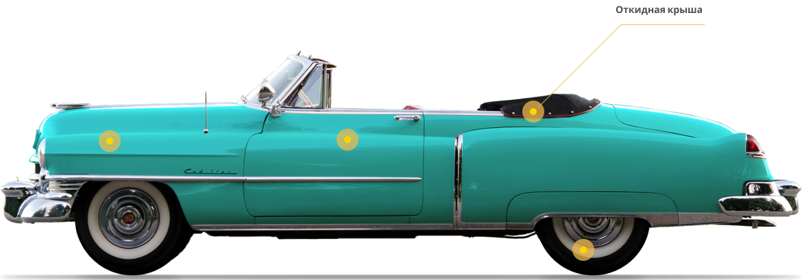
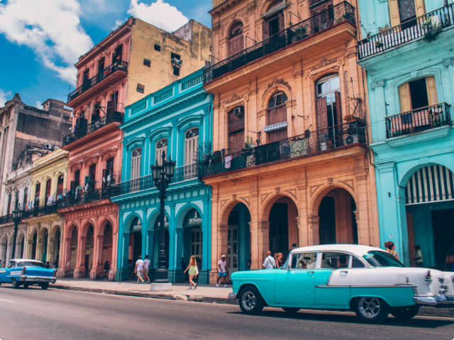

Почему тебе понравится отпуск на Кубе?
Куба всегда была привлекательна. Я люблю ее за уникальность, креативность и дух выживания. Я люблю Кубу потому, что несмотря на 60 лет неудач, она остается оптимистичным и открытым местом. Пройдите по улице с кубинским другом, и в одном квартале вы получите пять рукопожатий, четыре поцелуя, три приветствия «Диме Хермано!» И по крайней мере два приглашения в чей-то дом.
1,920
Trips
271
Venues
3,321
Tickets Sold
2,912
Reviews
Почему тебе понравится отпуск на Кубе?
Куба похожа на принца в плаще бедняка; за иногда ветхими фасадами задерживается золотая пыль. Именно эти богатые дихотомии делают путешествие здесь захватывающим. В этой стране, застрявшей во временном перекосе и шокирующей экономическим эмбарго, которое длилось более полувека, вы можете распрощаться с повседневными предположениями и ожидать неожиданностей.
Кубинский Кадиллак

Американское торговое эмбарго с Кубой в 1960 году привело к немедленному отделению тысяч автомобилей 1940-х и 1950-х годов, построенных в Детройте от их запасных частей. Кабриолеты всегда были популярны благодаря круглогодичной тропической погоде. Не упустите место для фотосессии в Гаване. Площадь вокруг Капитолия - лестная копия здания Капитолия в Вашингтоне, в дневное время украшены 50-летними американскими автомобилями.
Куба в фото
Когда вы думаете о Карибском море, вы, вероятно, думаете о Кубе. Это одинокая акация, вырисовывающаяся на фоне горизонта, уходящего в вечность. Это снежная гора почти на экваторе и в пределах видимости суровых пустынь. Это пышная, покрытая пальмами береговая линия океана, это Великая рифтовая долина, которая когда-то угрожала разорвать континент на части, и это густые леса, напоминающие сердце континента.
